血战到底
一、游戏规则
1、牌数：麻将“筒”、“条”、“万”共108张
2、玩家胡牌后，其余玩家继续游戏，直到流局或只有一位未胡牌玩家为止
3、胡牌时，手牌最多只有2种花色，否则不可以胡牌
4、坐庄规则：上一局最先胡牌玩家当庄，如一炮多响则点炮玩家为庄，流局则庄家的下家当庄
5、可碰、可杠、不可吃、可点炮、可自摸
6、流局时查叫：即未叫玩家要赔偿有叫玩家最大可能番数，查花猪玩家（含三种花色牌）需赔偿全部玩家4番（封顶范围内）或封顶番的积分，未叫玩家的刮风下雨不算分
二、术语解释
1、换三张：游戏开始时，玩家需要选中3张同花色的牌与其他玩家随机交换
2、定缺：摸牌结束后由玩家选择一种花色作为该局游戏定缺的花色，游戏中必须优先打该花色的牌（不能碰不能杠），除了其他花色牌的碰杠
3、刮风（明杠）：分为直杠和面下杠（巴杠）
直杠：玩家手中有三张一样的牌，其他玩家打出此牌，该玩家选择杠，收点杠玩家2积分
面下杠：玩家已经碰出一对牌，又自摸到碰出的牌选择杠，收未胡牌玩家1积分，此时可以被其他玩家抢杠胡，若抢杠胡则此杠不结算
4、下雨（暗杠）：玩家手中含有4张相同的牌（未碰），此时玩家选择杠。暗杠不可被抢杠胡，收未胡牌玩家2积分
5、过手胡：在某一回合中，若有人点炮，玩家没有胡，则此回合有其他玩家点炮，只要没有加番就也不能胡，自摸除外。当玩家摸牌，碰牌，杠牌后，过手胡限制解除
6、查大叫：流局时没叫的玩家赔给有叫的玩家最大可能的番数（封顶范围内）
7、自摸：玩家自摸胡牌时，赢得其他未胡牌的玩家积分
8、呼叫转移：开杠的人在杠上点炮后，杠钱要一并转移给接炮的人。如果杠不结算则不转移，如点炮玩家为查叫玩家
9、杠上开花：点杠杠上开花算点炮与自摸有两种玩法选项。巴杠和暗杠杠上花算自摸三家
三、胡牌类型
1、平胡（0番）：四坎（除4副刻子）加一对将

2、对对胡（1番）：四副刻子加一对将
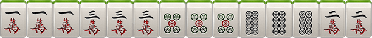3、清一色（2番）：全部是一种花色的平胡
4、七对（2番）：玩家手牌都是对子，没有碰和刮风下雨
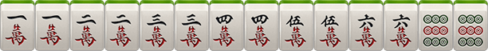5、龙七对（3番）：特殊的七对，只是7对中含有4张相同牌且没有杠出

6、清对（3番）：清一色+对对胡
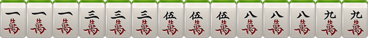7、清七对（4番）：清一色+七对

8、清龙七对（5番）：清一色+龙七对
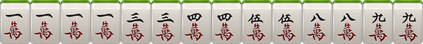9、全幺九（3番）：所有牌中，全部是1或者9组成的一句话、刻子、将牌

10、将对（3番）：所有牌中，全部是2.5.8组成的对对胡

11、将七对（4番）：所有牌中，全是2.5.8组成的龙七对

12、门清（1番）：胡牌时，没有碰过牌，没有明

13、中张（1番）：胡牌时，牌型中不包括1个9

四、番计算
1、番=底金X2
例如：底金为1分，0番（前提是胡了）=1分，1番=1*2=2分，2番=1*2*2=4分，3番=1*2*2*2=8分
2、基本输（赢）积分=番数+刮风下雨+自摸加底（自摸加番玩法则算在总番里）
3、点炮结算方式为1对1，自摸结算方式为1对多
4、另加番
根：+1番，所有牌中有4张一样的牌，（无论是碰、杠），可累计计算
杠上开花：+1番
杠上炮：+1番
抢杠胡：+1番
扫底胡：+1番 （牌墙最后一张牌自摸或点炮胡）
金钩胡：+1番（剩余一张牌单钓）
海底炮：+1番（牌墙最后一张牌点炮胡），且非必须打出
天胡：+3番（庄家起手胡牌）
地胡：+2番 （闲家待庄家出完第一张牌后，自摸一张胡牌）
备注：
1、各个牌型不重复计算，只收取最大番，且总番数不超过所选的封顶番数
2、算番之后，龙七对和清龙七对需要减一根
长沙麻将
一、长沙麻将
长沙麻将增加了四喜、板板胡、六六顺、缺一色、天胡、地胡牌型
二、牌数
共108张：筒、索、万、不带东、南、西、北风、中、发、白
三、摸牌规则
游戏开始，庄家得14张牌，闲家得13张牌。庄家从牌中选1张丢出，闲家有权要那张丢出的牌。庄家的下家，有权吃碰杠胡。其它两家则只可碰杠胡，"胡"比"碰"与"杠"优先，"碰"与"杠"比"吃"优先
四、基本牌型
1、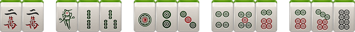
2、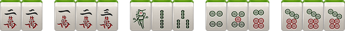
3、
4、
5、
注:1对(22)是将牌，长沙麻将需要2、5、8做将，比如2万、5条、8筒等，某些牌型则将可以为任意1对
五、胡牌类型
1、小胡
（1）、大四喜: 起牌后，玩家手上已有4张一样的牌，即可胡牌 (四喜计分等同小胡自摸)

（2）、板板胡: 起牌后，玩家手上没有一张 2、5 、8 (将牌)，即可胡牌(等同小胡自摸)
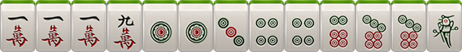（3）、缺一色: 起牌后，玩家手上筒、索、万任缺一门，即可胡牌(等同小胡自摸)

（4）、六六顺: 起牌后，玩家手上已有 2 个刻子(刻子：3个一样的牌)，即可胡牌(等同小胡自摸)
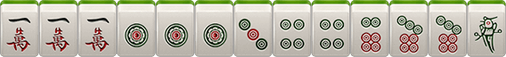（5）、平胡: 2 、5 、8 作将，其余成刻子或顺子，即可胡牌

2、大胡
（1）、碰碰胡：1万1万1万、1筒1筒1筒、7筒7筒7筒、 3条3条3条、 7条7条，乱将，即表示任意数字的牌都可以做将，可以是2、5、8牌做将，也可以是1、3、4、6、7、9牌做将，可碰、杠、自摸
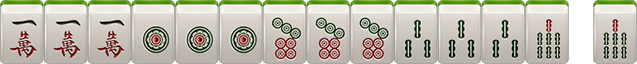（2）、将将胡：玩家手上每1张牌都为 2 、5、8 ，玩牌过程中可碰牌
（3）、清一色：同一种花色的牌组成，任意一种胡牌规则皆可，可吃、可碰、可杠，如果还满足其它规则的大胡，则在原有大胡基础上叠加
（4）、海底捞月：最后一张牌为海底牌。海底胡牌为大胡，需要将(将的种类根据当前牌型决定)
（5）、海底炮：如果A玩家要了海底牌，而又不能胡牌，必须打出；B玩家没有要海底牌，而又胡这张海底牌，即为B玩家胡牌。同时，如果C玩家和D玩家也能胡，则通胡
（6）、七小对：任意花色组成的七对牌

（7）、豪华七小对：手中任意七对牌，其中有4张一样的牌，但不能杠，算2个大胡的分，即12分
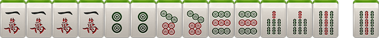（8）、杠上开花：玩家有4张一样的牌，即可选择开杠(听牌的情况下)。开杠要补2张牌，补张的牌被开杠者胡则为杠上开花，算大胡
（9）、抢杠胡：暗杠不能抢杠胡,只有明杠可以抢胡。玩家在明杠的时候，其他玩家可以胡被杠的此张牌，叫抢杠胡
（10）、杠上炮：开杠者补2张牌，补张的牌开杠者不能胡，而其他玩家可以胡，则属于杠上炮
（11）、全求人：吃、碰、补张以及杠后只剩一张(熟称单调)由别人打出或者自己摸到相同牌张即可胡牌
（12）、双豪华七小队：手中任意七对牌，其中有2组4张一样的牌，但没有杠。算3个大胡的分，即18分
六、庄家分配
1、第一局由创建房间者为庄家
2、以后谁胡牌，下局谁做庄
3、如果出现通炮情况，则下轮由放炮玩家当庄家
4、如果有人要了海底牌后却没人胡则要海底牌的玩家下局当庄家
5、如果四个玩家都不要海底牌，则下轮由第一个可以选择海底牌的玩家当庄家
6、如果此局无海底牌（即海底牌被补张），则补海底牌的玩家下局当庄家
七、抓鸟
抓鸟在胡牌后进行，由胡牌方进行（一炮多响时由点炮玩家进行），此时从牌堆上取创建房间时选得鸟数张牌，其中鸟牌以胡牌方为第1序位，当鸟牌的序数为159时，为胡牌方A的鸟牌，26为胡牌方的下家B的鸟牌，37为胡牌方的对家C的鸟牌，48为胡牌方的上家D的鸟牌。例如自摸胡牌方中鸟1个，则其他人多输1分，且庄家中鸟输赢多一分
八、特殊规则
1、通炮：即几个玩家可胡同一张牌，此牌即为通炮
2、补张：
A 、补张后可胡牌，算作自摸
B 、补张从最后一叠牌的上张拿，再拿下张，一次一张，依此类推，不可随意选择
C 、如果补张时只剩下海底，则补海底牌，此局则无海底牌
3、海底牌漫游：即玩家可选择是否要海底牌，按照座次轮询
4、漏胡：如果玩家漏掉了炮胡，则在玩家摸牌前禁止炮胡，摸牌后一切正常，只对该玩家有效，其他玩家正常
5、杠牌后只能由系统从最后面的牌中获得，如果玩家因为补张的牌胡了算杠上开花，如果没胡则必须打出该补张的牌，如果有其他玩家胡了打出的该补张牌则算杠上炮，属大胡。而且一旦开杠后摸进任何牌“开杠者“如果不能胡则必须打出，直到胡牌或放炮为止。开杠打出的2张牌如果没人胡可以进行吃碰杠补操作
九、计分规则
1、小胡自摸：每人输2分，总得分2*3=6分；庄家自摸，每人输3分
2、小胡接炮：点炮方输1分，总得分=1分；庄家接炮，点炮方输2分
3、大胡自摸：每人输6分，总得分6*3=18分；庄家自摸，每人输7分
4、大胡接炮：点炮方输6分，总得分=6分。庄家接炮，点炮方输7分
注：
1) 小胡和小胡之间能累计计算（如四喜+小胡）
2）小胡和大胡之间累计计算
3）大胡之间可以累计计算（算加法）如：七小对＋清一色
4）多种牌型累计计算时，庄闲、抓鸟只计算一次胡牌类型，如胡牌为自摸杠上开花一次(6分)、将将胡（6分），并同时为庄（1*3分）且庄家中2鸟（2*3分），即总分为45分
红中麻将
一、红中麻将
红中麻将打法简单、节奏快速、极易胡牌
二、牌数
红中麻将，共108张：筒、索、万、不带东、南、西、北风、中、发、白
三、摸牌
游戏开始，庄家得14张牌，闲家得13张，庄家从牌中选1张丢出。其它3家有权要那张丢出的牌，只能胡、碰、杠，胡比碰杠优先，不能吃
四、胡牌规则
1、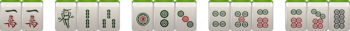
2、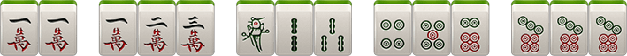
3、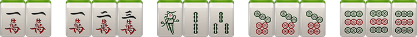
4、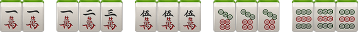
5、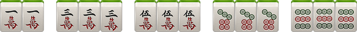
6、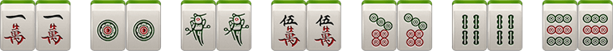
五、关于杠
1、明杠
A、手上有3张相同的牌，其他玩家打了第4张相同的牌即可开杠。举例：手上有3个一万，其他玩家打了个一万，则可开杠，如果没有流局，则放杠者出分。
B、碰牌之后，自己又摸了1张相同的牌即可开杠，举例：碰了一万，自摸个一万，则可开杠
2、暗杠
手上抓了四张相同的牌，就是暗杠
六、庄家分配：庄闲输赢多一分
1、第一局由创建房间者为庄家
2、以后谁胡牌，下局谁做庄
3、如果出现通炮情况，则下轮由放炮玩家当庄家
七、积分规则
1、自摸
每人输2分，胡牌玩家赢6分，如庄家自摸，闲家每人输3分
2、小胡接炮
点炮方输1分，胡牌玩家赢1分，如点炮方为庄家，则庄家多输1分，如接炮方为庄家，点炮的闲家多输1分
3、开杠
A、暗杠相当于自摸，每人出2分
B、碰牌之后，再抓上1个所碰的牌开杠，每人出1分
C、手抓了3个相同的牌，然后有人打了1个相同的牌，开杠的话，放杠者出3分
注：杠牌后如果流局依然算杠分
八、特殊规则
1、通炮：即几个玩家可胡同一张牌，此牌即为通炮
2、漏胡：如果玩家漏掉炮胡，则该玩家摸牌前禁止炮胡，摸牌后正常；只对该玩家漏胡，其他玩家正常
九、红中赖子
红中特殊规则:
1、除了万，条，筒, 多了红中(共计112张牌)
2、红中在手中可以做万能牌使用
3、红中不能碰，不能杠
4、红中不能和其他牌组合碰杠。比如：1万1万红中，别人打1万，是不能杠一万的
5、起手4个红中可以直接胡
十、抓鸟
抓鸟在胡牌后进行，由胡牌方进行（一炮多响时由点炮玩家进行），此时从牌堆上取创建房间时选得鸟牌张数，其中包含159（勾选红中赖子玩法时，抓鸟抓出红中算1）牌的个数既为中鸟个数，例如自摸中鸟1个，则最终赢得分数为3*（3+1）=12分
斗地主
一、发牌
一副牌54张，3张为底，剩余牌依次分发给3家，每家17张牌，底牌在确认地主后所有玩家均可看
二、叫牌、确认地主
开房第一局由房主叫地主，之后由赢的玩家叫地主，若出现农民赢，则随机一个农民。叫地主倍数为X1或X3，抢地主抢到X4或X12倍的玩家直接为地主。如果所有玩家选择了“不叫”，则牌局不变，重新发牌
将三张底牌交给地主，并亮出底牌让所有人都能看到。地主首先出牌，然后按顺序依次出牌，轮到用户跟牌时，用户可以选择“不出”或出比上一个玩家大的牌。某一玩家出完牌时结束本局
三、牌型
火箭：即双王（大王和小王），最大的牌
炸弹：4张相同数字的牌（如:四张7）
单牌：单个牌（如红桃5）
对牌：数值相同的两张牌（如梅花4+方块4）
三张牌：数值相同的三张牌（如三个J）
三带一：数值相同的三张牌十一张单牌或一对牌。例如：333+6或444+99
单顺：五张或更多的连续单牌（如：45678或78910JQK）。不包括2点和双王
双顺：三对或更多的连续对牌（如：334455、7788991010JJ）。不包括2点和双王
三顺：二个或更多的连续三张牌（如：333444、555666777888）。不包括2点和双王
飞机带翅膀：三顺+同数量的单牌（或同数量的对牌），如：444555+79或333444555+7799JJ
四带二：四张牌+两手牌。（注意：四带二不是炸弹），如：5555+3+8或4444+55
四、牌型大小
火箭最大，可以打任意其他的牌
炸弹比火箭小，比其他牌大。都是炸弹时按牌的分值比大小
除火箭和炸弹外，其他牌必须要牌型相同且总张数相同才能比大小
单牌按分值比大小，依次是大王>小王>2>A>K>Q>J>10>9>8>7>6>5>4>3，不分花色
对牌、三张牌都按分值比大小
顺牌按最大的一张牌的分值来比大小
飞机带翅膀和四带二按其中的三顺和四张部分来比，带的牌不影响大小
五、胜负
地主、农民中任意一家先出完所有的牌谁获胜
六、算分规则
底分1
“抢地主”×2
炸弹翻倍
斗牛
一、游戏庄家与倍数
抢庄：
满人开始后随机抢庄，点过抢庄的人有机会成为庄家，在玩家中选择财富最多的玩家为庄，若财富相同则随机分配庄家。如果都没人抢庄，随机选择一个玩家进行坐庄。
倍数：
系统发5张牌，先显示前3张牌，闲家进行倍数选择，选择倍数后再显示后两张牌，选择的倍数将影响输赢结果的大小，所有比牌均是庄家与闲家比牌。倍数选择：5倍、10倍、15倍、20倍
二、牌型介绍
五小牛：手上牌均小于5点，且总和小于10点
五花牛：手上全为JQK
四炸：5张牌有4张相同
牛牛：选出3张牌相加为10或20或30，剩余2张牌相加为10或20
牛九-牛二：选出3张牌相加为10或20或30，剩余2张牌相加为9-2
牛丁：选出3张牌相加为10或20或30，剩余2张牌相加为1
没牛：5张牌任意3张牌相加不能成为10或20或30
三、牌型大小
（1）牌型：
五小牛>五花牛>四炸>牛牛>牛九>牛八>牛七>牛六>牛五>牛四>牛三>牛二>牛丁>没牛
（2）点数：
K>Q>J>10>9>8>7>6>5>4>3>2>A
（3）相同牌型：
庄闲家牌型一样大小时，依次比最大一张牌，最大一张牌一样，则按花色比较：黑桃>红桃>梅花>方块
（4）牌型倍数：
五小牛8倍
五花牛5倍
四炸4倍
牛牛3倍
牛九、牛八2倍
其他牌型均为1倍
四、特殊牌型
（1）四炸：5张牌有4张相同，若庄闲两家都是四炸，比较4张一样牌的大小
（2）五花牛：若庄闲两家都是五花牛，则比较最大一张牌的大小
（3）若5张牌既符合四炸又符合五花牛，或满足五小牛和四炸，按最大牌型算
五、结算规则
闲家赢牌金币数=(房间底注*所压倍数）*闲家牌型倍数
闲家输牌金币数=(房间底注*所压倍数）*庄家牌型倍数
庄家赢牌金币数=闲家输牌金币总和
六、出牌规则
支持系统计算牌型出牌与玩家自选牌型出牌，若5秒内未自选牌，则默认系统牌型出牌。若玩家自选牌型，无论是否为最好的牌型，都按玩家自选的牌型大小算
广东麻将-推倒胡
一、麻将规则
推倒胡不许吃牌只许自模，打法简单节奉快速，无大胡
二、牌数
本游戏提供带风玩法，带风为136张
三、玩法
不许吃牌，可以碰牌、杠牌，不许吃胡只能自摸
四、鬼牌
鬼牌：万能牌，可以当做任意一张牌使用，白板做鬼，不可与其他牌组合碰杠
白板做鬼：
在广东地区，白板被称作棺材板，采用白板做鬼
五、庄家
第一局开启房间的玩家坐庄，如果庄家胡牌则继续坐庄，如果闲家胡牌，则胡牌的玩家坐庄，流局则上一局庄家继续坐庄
六、胡牌牌型
任意牌凑成一对再加上4组顺子(三张相连的牌)或者刻子(三张一样的牌)或者顺子与刻子混合的牌型，或七小对
七、计分规则
1、自摸赢6分(不分有鬼或无鬼〕，输牌玩家每人输2分，买马1分1个
2、摸4鬼直接胡牌赢6分，输牌玩家每人输2分，买马1分1个
3、放（点）杠：如果某玩家出牌，造成了其他玩家杠牌，结算时放杠者赔给杠牌者3分，且流局算杠分
4、碰杆：某玩家摸牌后开明打(碰过的牌开杆)，结算时其余三家每人赔给胡牌者1分，且流局算杠分
5、暗杠：某玩家暗杠后，在结算时其余三家每人赔给杠牌者2分，且流局算杠分
6、抢杠胡：只有碰杠可以被抢杠胡。在结算时，抢杠胡按自摸算。赢6分，杠牌玩家输6分，买马1分1个，如果设定抢杠胡全包，则马牌的分数也由杠牌玩家承担，如果未设定抢杠胡全包则马牌的分数由剩余3个输牌的玩家分担
7、杠上开花：属于自摸，即玩家开杠（接杠、碰杠、暗杠）后，进一张牌则胡牌。若勾选杠爆全包，则接杠后的杠上开花胡牌分数让点杠者全包，包括中马分数。若没勾选，则胡牌分数由点杠者出，中马分数由三家玩家承担
八、买马
1、玩家开房间时可以选择买马的数量，如选择买6马，则在牌局开始时，会从牌墙最后预留出6张牌作为马牌（小于6张牌则全买），在有人胡牌后，则将马牌翻开
2、在结算计分时，只计算胡牌玩家的马，其他家的马不算，胡牌玩家的马牌对应为1、5、9、东风、白板、红中
卡五星
一、卡五星麻将规则
孝感三人卡五星是孝感地区最新兴起并流行的游戏，它采用一副麻将去掉”万”一门牌和东西南北风，共84张牌，由三个人来争谁先胡牌。牌形变化多，胡牌速度快是它的特点。
二、坐庄规则
游戏中采用连庄方式，仅第一局为创建房间的玩家为庄，之后将由本局胡牌的玩家下局坐庄，如庄家胡牌，则继续连庄。若一炮双响则点炮玩家为下局庄家，若荒庄则摸最后一张牌的玩家下局坐庄。
三、胡牌规则
可碰，可杠，不可吃牌
自摸：自己抓牌胡牌（包括杠上开花）
点炮：胡他人打出的牌（包括抢杠胡）
自摸两家出，点炮则由点炮者出
四、胡牌类型
1、屁胡（小胡）：普通的四坎牌加一对将。【x1】
2、碰碰胡：由4副刻子（杠）加一对将组成的胡牌。【x2】
3、明四归一：要胡的牌已被自己碰过，最后又赢这张牌（点炮也算）。【x2】
4、 暗四归一：要胡的牌自己手上已有三张，最后又赢这张牌（点炮也算）。【x4】
5、七对：七个对子组成的胡牌。【x4】
6、龙七对：七对牌中间，有四个相通的牌当做对子使用。【x8】
7、双龙七对：七对牌中有两个四个相同的牌当做四个对子使用。【x16】
8、大三元：由三幅刻子，中发白（杠）组成的胡牌。【x8】
9、小三元：由两幅刻子，中发白（杠）其中两个和一对将牌（中发白）其中一个组成的胡牌。【x4】
10、杠上开花：杠的同时摸来自己的胡牌。【x2】
11、杠上炮：杠后打出的牌被别人胡牌，杠钱照算。【x2】
12、抢杠胡：胡别人开明杠的牌。【x2】
13、卡五星：由4条和6条组成的赢5条或者4筒和6筒组成赢5筒。【x2】
14、清一色：由一种花色组成的胡牌。【x4】
15、手抓一：已碰了四对牌，胡牌时自己手中只有一张牌单调另一张。【x4】
16、海底捞月：自摸整副牌的最后一张。【x2】
17、亮倒：听牌后，可以选择把手中的牌亮出来给所有人看着打，同时声明自己要胡的牌。亮倒之后手中已有的牌就不能再换了，除非自摸胡牌，否则只能摸什么打什么（可以把手中不影响听牌的刻子扣住，别人打出另一张仍可杠）分数为【x2】。
不同：
1、没有标明的双龙七对（超豪华七对）、杠上花、杠上炮、抢杠胡、海底捞月番数按上面
2、牌型叠加的番数不同，如清一色与其他牌型叠加都为X8
备注：
1、龙七对和双龙七对，不再计算暗四归一的番数。亮倒后则是在胡牌的基础上进行×2。以上各种胡牌类型之间可以累加（即相乘），但是七对加清一色连顺听5时，只算最大胡牌牌型×8的清一色加七对，或×8的清一色加卡五星，例如11 22 33 44 5 6677。同样的龙七对加清一色连顺听5时，只算×8的清一色加暗四归一或×8的清一色龙七对或×8的清一色加卡五星，例如11 22 33 44 555 66。
2、暗 杠：A自抓4张相同的牌开杠。此时另外二家都要给A 2倍的底金。
明 杠：A自己抓进一张与碰的明刻相同的牌开杠，另外二家都要给A 1倍的底金。（蓄杠or擦杠）
A自己有暗刻，杠别人打出的一张相同的牌，此时点杠者给A 2倍的底金，其他玩家不用出。（直杠）
杠上杠：如果A杠后打出的牌被别人杠或者自己继续杠，那么第二杠要翻倍，如果杠完之后又被人杠或者自己杠，就再翻一倍，以此类推；每杠的钱都要算，不是只算最后一杠，杠上杠不封顶
荒 庄：牌全部摸完后依然没人胡牌为荒庄，荒庄不慌杠。
五、胡牌分数
1分：明杠，屁胡
2分：暗杠，碰碰胡，明四归一，杠上开花，杠上炮，抢杠胡，卡五星，海底捞月，亮倒
4分：暗四归一，七对，小三元，清一色，手抓一
8分：龙七对，大三元
16分：双龙七对
六、胡牌计算
1、基本输（赢），即底分X倍数+杠钱，且底分为1
例子：
（1）清一色加七对就是：4×4=16番
（2）碰了的四对牌中有中发白3副刻子（杠），最后手中只剩一张牌且胡牌。就是：大三元+碰碰胡+手抓一：8×2×4=64番
2、点炮：只有点炮者输
3、自摸：胡牌者除外都输
4、以上各种胡牌类型之间可以累加（相乘）
七、特殊规则
1、如点了亮倒的人和，那么就相当于亮倒的人自摸，但由点炮者一个人出 ；且点炮者需赔另一个玩家2个，即：【陪玩】，除亮倒玩家点亮倒玩家的炮
不同：
1、亮倒后，玩家不可点亮倒玩家的炮（除双方亮倒点炮），不存在陪玩
2、亮倒后，不可碰，可选择是否显示未杠牌（非碰牌）
A、显示未杠牌（非碰牌），不可接杠，或不可暗杠
B、不显示未杠牌（非碰牌），可接杠，或可暗杠
C、无论是否显示未杠牌，都可碰后杠
2、明杠必须当时就杠，否则就不能再杠；手上有暗刻时，必须直接杠或者选择不杠，不能碰后再杠
3、摸到最后一张牌，有杠不能杠，打出去的牌其他人也不能杠
4、漏胡：如果一家点炮没有胡，那么在没有过头的情况下，也不能和其他人的，不管听几张，所有的张都不能胡,除非胡第二家的比第一家的牌大
5、不管是明四归一还是暗四归一，大胡（清一色）的话，手上的四归也算（即可以杠的牌不杠用在听牌的牌型中），屁胡要听牌后胡的那张才算
6、杠上杠后放的杠上炮，不管有几个杠上杠，放的杠上炮都只×2
7、手里有暗杠，不能碰其他牌后再开暗杠，必须过一圈抓牌后才可以开杠
8、包赔，即流局才查叫，未听牌玩家赔听牌玩家最大胡牌番数
跑得快
一、游戏人数
3人
二、游戏牌数
一副牌去掉大小王、去掉一个A、去掉3个2，共剩48张牌，每人16张牌，一手牌中只有1个2，3个A
三、出牌顺序
每把(每把10局/20局)首盘游戏由第一个拿到黑桃3的玩家先出牌，可以出任意的牌型，(若勾选了先出黑桃3，打出的牌中必须包含黑桃3)，然后其他玩家依次出牌(要的起的情况下，必须要出牌)。第二盘开始赢家先出(不需要黑桃3)
四、牌型与规则
1、单张:任意门张单牌
2、顺子:任意5张或者5张以上点数相连的牌。特殊:2是最大的单牌，不能当顺子出
3、对子:可以打单对，如:44
4、连对:2对或2对以上点数相连的牌，如:5566
5、三带二:点数相同的3张牌+一对牌或者点数相同的3张牌+2张不同的单牌，如:55577或者55567
6、三带一:打到最后剩4张牌的时候才可以3带1
7、没打完的情况下，不可以出3张点数相同的牌!最后剩3张牌的时候可以不带
8、飞机:两顺或以上+数量相同的对牌，如:555666 + 99JJ。也可以带4张单牌，如:555666+78910
9、在有牌情况下，出555666必须带4张牌，除非牌不够不带或者带少牌
10、炸弹:4张点数相同的牌，如6666, 7777
11、关门:有一家牌已经出完，另一家或者两家1张牌都没出，此时的状态称为关门
12、牌型的比较点数大小，从大到小依次为:2, A, K, Q, J, 10, 9, 8, 7, 6, 5,4,3
13、下家报单时，必须出最大单牌
14、若最后的牌数构成牌型（包括一个对子、单牌），则必须全部出
五、积分规则
1、一张牌1分（未赢玩家，剩余的牌，一张牌扣1分）
2、1个炸10分，收其他两家
注：
A、若炸弹被炸，只算最大的那个炸弹分，即：A玩家出炸3，B玩家出炸4，C玩家出炸6，则只算C玩家一个炸6的分，其他玩家的炸3与4不叠加
B、在A基础上，若C玩家继续出1个炸，其他玩家没炸出，则C玩家算2个炸的分
C、算炸弹得分的玩家，无论是输赢玩家，都得分
3、报单不出不进（即报单未赢的玩家，不需要扣剩余牌分，只需扣炸弹分）
4、关门:被关门者剩余牌的张数*2(和炸弹可累加)
炸金花
一、游戏人数
2-5个人同时在一桌游戏，2人及以上即可游戏。
二、游戏牌数
52张扑克牌 （一副牌中不要大小王）
三、游戏术语
庄家：上一轮赢的玩家是下一轮的庄家，第一局或者赢家离开的情况随机选一个玩家为庄家，庄家的下家先下注，下注额为单注。
底注（可配置）：系统默认每位投入的初始注，根据房间设置固定数额。
投注额：每次投注的金额。
可比轮次（可配置）：当达到可比轮次后，玩家可发起比牌。
手数封顶（可配置）：每副牌每名玩家下注次数的上限（不包括底注），当达到手数封顶时，玩家将只可以与其他玩家比牌（比牌时仍要支付比牌费用，比牌支付单注2倍费用）。
暗注：不看牌下注。
看牌：看自己牌型，自己牌明牌显示，其他人看不到
明注：看牌后下注，看牌后下注的金额是暗牌2倍。
跟注：和上家加入同样多的注，分明注暗注，明注是暗注投注额2倍
加注：在上家投入的基础上增加投入注，加注采用固定加注倍数。分明注暗注，明注是暗注投注额2倍
比牌：拿自己的牌和其他玩家的牌比大小，同时要支付当前单注2倍的比牌费用，加入锅底。
比牌说明：
1、当前手数达到n次（n数值可配）或以上时，玩家可以在自己操作时与其他最多一位玩家比牌，比牌费用等于当前单注的2倍。注意：当只剩两名玩家时，无论是第几轮都可以比牌。
2、比牌即暗中比较此两人牌型的大小，败者损失本副牌的操作权。
3、比牌时双方不能看到互相的牌，比牌结束时双方可见对方与自己的牌。
4、比牌如出现双方牌型大小相同的情况，主动比牌者为败者。
5、在玩家身上的金币不足以支付一注筹码的时候玩家只能比牌或者弃牌，玩家可以选择任何一人进行比牌，每轮只允许与一人比牌。
放弃：放弃原来注，判输。
全押（即all in）：
1、“全押”即一次性将剩余手数所有筹码都加入，其他人也必须“全押”才能继续。
2、全押的数量，根据明牌、暗牌的状态不同而不同，具体为明牌所需全押数额为暗牌的2倍。
3、最后二人全押比牌时，如果两人相同，判发起全押玩家获胜。
四、详细规则
牌型：
豹子：三张点相同的牌，如AAA、222。
顺金：花色相同的顺子，如黑桃456、红桃789。
金花：花色相同，非顺子，如黑桃368，方片945。
顺子：花色不同的顺子，如黑桃5红桃6方片7。
对子：两张点相同的牌，如223，334。
散牌：三张牌不组成任何类型的牌。
特殊：花色不同的235。
大小规则：
1. 豹子>顺金>金花>顺子>对子>散牌；特殊>豹子。特殊<散牌。
2．牌点中，2为最小，A为最大。从大到小依次为：A、K、Q、J、10、9、8、7、6、5、4、3、2。
3. 同种牌型，按牌型中的大小顺序按照从大到小依次比点，大小若相同，开牌者输。 顺子AKQ>KQJ……432>A23
注：KA2不是顺子。
4. 当豹子存在时，“花色不同235”>“豹子” 即豹子存在时，若花色不同235也存在，花色不同235赢。 注：与豹子同时存在的不同花色235最大。
5. 相同牌，主动比牌时，发起比牌者输；全押比牌时，发起全押比牌者赢。
五、退出与重连
1 退出：
1.1 退出大厅：未开始游戏，房主与玩家可退出大厅
1.2 解散房间：
A、未开始游戏：只有房主能解散房间
B、开始游戏：玩家可发起解散，2人即1人同意、3人即2人同意或5分钟倒计时等即可解散成功，否则解散失败
2 重连
2.1 退出应用/关闭应用
A、已创建房间/已加入房间：重连回房间
B、否则：重连回大厅
2.2 网络掉线
A、已创建房间/已加入房间：重连回房间
B、否则：重连回大厅
随州卡五星
一、卡五星麻将规则
随州三人卡五星是根据襄阳地区卡五星进行玩法上创新游戏，它采用一副麻将去掉”万”一门牌和东西南北风，共84张牌，由三个人来争谁先胡牌。牌形变化多，胡牌速度快是它的特点。
二、坐庄规则
游戏中采用连庄方式，仅第一局为创建房间的玩家为庄，之后将由本局胡牌的玩家下局坐庄，如庄家胡牌，则继续连庄。若一炮双响则点炮玩家为下局庄家，若荒庄则摸最后一张牌的玩家下局坐庄。
三、胡牌规则
可碰，可杠，不可吃牌。
自摸：自己抓牌胡牌（包括杠上开花）。
点炮：胡他人打出的牌（包括抢杠胡）。
自摸两家出，点炮则由点炮者出。
四、胡牌类型
1、屁胡（小胡）：普通的四坎牌加一对将。【x1】
2、碰碰胡：由4副刻子（杠）加一对将组成的胡牌。【x2】
3、明四归一：要胡的牌已被自己碰过，最后又赢这张牌（点炮也算）。【x2】
4、暗四归一：要胡的牌自己手上已有三张，最后又赢这张牌（点炮也算）。【x4】
5、七对：七个对子组成的胡牌。【x4】
6、龙七对（豪华七对）：七对牌中间，有四个相通的牌当做对子使用。【x8】
7、双龙七对（超豪华七对）：七对牌中有两个四个相同的牌当做四个对子使用。【x16】
8、大三元：由三幅刻子，中发白（杠）组成的胡牌。【x8】
9、小三元：由两幅刻子，中发白（杠）其中两个和一对将牌（中发白）其中一个组成的胡牌。【x4】
10、杠上开花：杠的同时摸来自己的胡牌。【x2】
11、杠上炮：杠后打出的牌被别人胡牌，杠钱照算。【x2】
12、抢杠胡：胡别人开明杠的牌。【x2】
13、卡五星：由4条和6条组成的赢5条或者4筒和6筒组成赢5筒。【x2】
14、清一色：由一种花色组成的胡牌。【x4】
15、手抓一：已碰了四对牌，胡牌时自己手中只有一张牌单调另一张。【x4】
16、海底捞月：自摸整副牌的最后一张。【x2】
17、亮倒：听牌后，可以选择把手中的牌亮出来给所有人看着打，同时声明自己要胡的牌。亮倒之后手中已有的牌就不能再换了，除非自摸胡牌，否则只能摸什么打什么（可以把手中不影响听牌的刻子扣住，别人打出另一张仍可杠）。【x2】
不同：
1、没有标明的双龙七对（超豪华七对）、杠上花、杠上炮、抢杠胡、海底捞月番数按上面
2、牌型叠加的番数不同，如清一色与其他牌型叠加都为X8
备注：
（1）、
龙七对和双龙七对，不再计算暗四归一的番数。亮倒后则是在胡牌的基础上进行×2。以上各种胡牌类型之间可以累加（即相乘），但是七对加清一色连顺听5时，只算最大胡牌牌型×8的清一色加七对，或×8的清一色加卡五星，例如11 22 33 44 5 6677。同样的龙七对加清一色连顺听5时，只算×8的清一色加暗四归一或×8的清一色龙七对或×8的清一色加卡五星，例如11 22 33 44 555 66。
（2）、
暗 杠：A自抓4张相同的牌开杠。此时另外二家都要给A 2倍的底金。
明 杠：A自己抓进一张与碰的明刻相同的牌开杠，另外二家都要给A 1倍的底金。（蓄杠or擦杠）
A自己有暗刻，杠别人打出的一张相同的牌，此时点杠者给A 2倍的底金，其他玩家不用出。（直杠）
杠上杠：如果A杠后打出的牌被别人杠或者自己继续杠，那么第二杠要翻倍，如果杠完之后又被人杠或者自己杠，就再翻一倍，以此类推；每杠的钱都要算，不是只算最后一杠，杠上杠不封顶
荒 庄：牌全部摸完后依然没人胡牌为荒庄，荒庄不慌杠。
五、胡牌分数
1分：明杠，屁胡。
2分：暗杠，碰碰胡，明四归一，杠上开花，杠上炮，抢杠胡，卡五星，海底捞月，亮倒。
4分：暗四归一，七对，小三元，清一色，手抓一。
8分：龙七对，大三元。
16分：双龙七对。
六、胡牌计算
1、基本输（赢），即底分X倍数+杠钱，且底分为1
例子：
1）清一色加七对就是：×8番。
2）碰了的四对牌中有中发白3副刻子（杠），最后手中只剩一张牌且胡牌。就是：大三元+碰碰胡+手抓一：8×2×4=64番
2、点炮：只有点炮者输。
3、自摸：胡牌者除外都输。
4、以上各种胡牌类型之间可以累加（即相乘）
七、特殊规则
1.如果荒庄，那么第一个亮倒的要赔每家1个 ；
2. 如点了亮倒的人和，那么就相当于亮倒的人自摸，但由点炮者一个人出 ；且点炮者需赔另一个玩家2个，即：【陪玩】，除亮倒玩家点亮倒玩家的炮
不同：
1、亮倒后（包括部分亮），玩家不可点亮倒玩家的炮（除双方亮倒点炮），不存在陪玩
2、亮倒后（包括部分亮），不可碰，可选择是否显示未杠牌（非碰牌）
A、显示未杠牌（非碰牌），不可接杠，或不可暗杠
B、不显示未杠牌（非碰牌），可接杠，或可暗杠
C、无论是否显示未杠牌，都可碰后杠
3、明杠必须当时就杠，否则就不能再杠；手上有暗刻时，必须直接杠或者选择不杠，不能碰后再杠 ，即没有过手杠；
4、摸到最后一张牌，有杠不能杠，打出去的牌其他人也不能杠；
5、漏胡：如果一家点炮没有胡，那么在没有过头的情况下，也不能和其他人的，不管听几张，所有的张都不能胡,除非胡第二家的比第一家的牌大；
6、不管是明四归一还是暗四归一，大胡（清一色）的话，手上的四归也算（即可以杠的牌不杠用在听牌的牌型中），对应见四归，屁胡要听牌后胡的那张才算；
7、杠上杠后放的杠上炮，不管有几个杠上杠，放的杠上炮都只×2；
8、手里有暗杠，不能碰其他牌后再开暗杠，必须过一圈抓牌后才可以开杠。
七、买马规则
1、经典买马：玩家在自摸或亮倒自摸的情况下，抓剩余牌堆一张牌，无则不抓，抓到几分得几分，如9条9分，中发白10分，收两家
2、147买马：玩家在自摸或亮倒自摸的情况下，抓剩余牌堆五张牌（不够则全抓），分为1/4/7（如1条，4筒等）中马，中发白默认中马，中1马收1分，收两家
襄阳卡五星
一、卡五星麻将规则
襄阳三人卡五星是襄阳地区最新兴起并流行的游戏，它采用一副麻将去掉”万”一门牌和东西南北风，共84张牌，由三个人来争谁先胡牌。牌形变化多，胡牌速度快是它的特点。
二、坐庄规则
游戏中采用连庄方式，仅第一局为创建房间的玩家为庄，之后将由本局胡牌的玩家下局坐庄，如庄家胡牌，则继续连庄。若一炮双响则点炮玩家为下局庄家，若荒庄则摸最后一张牌的玩家下局坐庄。
三、胡牌规则
可碰，可杠，不可吃牌。
自摸：自己抓牌胡牌（包括杠上开花）。
点炮：胡他人打出的牌（包括抢杠胡）。
自摸两家出，点炮则由点炮者出。
四、胡牌类型
1、屁胡（小胡）：普通的四坎牌加一对将。【x1】
2、碰碰胡：由4副刻子（杠）加一对将组成的胡牌。【x2】
3、明四归一：要胡的牌已被自己碰过，最后又赢这张牌（点炮也算）。【x2】
4、暗四归一：要胡的牌自己手上已有三张，最后又赢这张牌（点炮也算）。【x4】
5、七对：七个对子组成的胡牌。【x4】
6、龙七对（豪华七对）：七对牌中间，有四个相通的牌当做对子使用。【x8】
7、双龙七对（超豪华七对）：七对牌中有两个四个相同的牌当做四个对子使用。【x16】
8、大三元：由三幅刻子，中发白（杠）组成的胡牌。【x8】
9、小三元：由两幅刻子，中发白（杠）其中两个和一对将牌（中发白）其中一个组成的胡牌。【x4】
10、杠上开花：杠的同时摸来自己的胡牌。【x2】
11、杠上炮：杠后打出的牌被别人胡牌，杠钱照算。【x2】
12、抢杠胡：胡别人开明杠的牌。【x2】
13、卡五星：由4条和6条组成的赢5条或者4筒和6筒组成赢5筒。【x2】
14、清一色：由一种花色组成的胡牌。【x4】
15、手抓一：已碰了四对牌，胡牌时自己手中只有一张牌单调另一张。【x4】
16、海底捞月：自摸整副牌的最后一张。【x2】
17、亮倒：听牌后，可以选择把手中的牌亮出来给所有人看着打，同时声明自己要胡的牌。亮倒之后手中已有的牌就不能再换了，除非自摸胡牌，否则只能摸什么打什么（可以把手中不影响听牌的刻子扣住，别人打出另一张仍可杠）。【x2】
不同：
1、没有标明的双龙七对（超豪华七对）、杠上花、杠上炮、抢杠胡、海底捞月番数按上面
2、牌型叠加的番数不同，如清一色与其他牌型叠加都为X8
备注：
（1）、
龙七对和双龙七对，不再计算暗四归一的番数。亮倒后则是在胡牌的基础上进行×2。以上各种胡牌类型之间可以累加（即相乘），但是七对加清一色连顺听5时，只算最大胡牌牌型×8的清一色加七对，或×8的清一色加卡五星，例如11 22 33 44 5 6677。同样的龙七对加清一色连顺听5时，只算×8的清一色加暗四归一或×8的清一色龙七对或×8的清一色加卡五星，例如11 22 33 44 555 66。
（2）、
暗 杠：A自抓4张相同的牌开杠。此时另外二家都要给A 2倍的底金。
明 杠：A自己抓进一张与碰的明刻相同的牌开杠，另外二家都要给A 1倍的底金。（蓄杠or擦杠）
A自己有暗刻，杠别人打出的一张相同的牌，此时点杠者给A 2倍的底金，其他玩家不用出。（直杠）
杠上杠：如果A杠后打出的牌被别人杠或者自己继续杠，那么第二杠要翻倍，如果杠完之后又被人杠或者自己杠，就再翻一倍，以此类推；每杠的钱都要算，不是只算最后一杠，杠上杠不封顶
荒 庄：牌全部摸完后依然没人胡牌为荒庄，荒庄不慌杠。
五、胡牌分数
1分：明杠，屁胡。
2分：暗杠，碰碰胡，明四归一，杠上开花，杠上炮，抢杠胡，卡五星，海底捞月，亮倒。
4分：暗四归一，七对，小三元，清一色，手抓一。
8分：龙七对，大三元。
16分：双龙七对。
六、胡牌计算
1、基本输（赢），即底分X倍数+杠钱，且底分为1
例子：
1）清一色加七对就是：×8番。
2）碰了的四对牌中有中发白3副刻子（杠），最后手中只剩一张牌且胡牌。就是：大三元+碰碰胡+手抓一：8×2×4=64番
2、点炮：只有点炮者输。
3、自摸：胡牌者除外都输。
4、以上各种胡牌类型之间可以累加（即相乘）
七、特殊规则
1.如果荒庄，那么第一个亮倒的要赔每家1个 ；
2. 如点了亮倒的人和，那么就相当于亮倒的人自摸，但由点炮者一个人出 ；且点炮者需赔另一个玩家2个，即：【陪玩】，除亮倒玩家点亮倒玩家的炮
不同：
1、亮倒后（包括部分亮），玩家不可点亮倒玩家的炮（除双方亮倒点炮），不存在陪玩
2、亮倒后（包括部分亮），不可碰，可选择是否显示未杠牌（非碰牌）
A、显示未杠牌（非碰牌），不可接杠，或不可暗杠
B、不显示未杠牌（非碰牌），可接杠，或可暗杠
C、无论是否显示未杠牌，都可碰后杠
3、明杠必须当时就杠，否则就不能再杠；手上有暗刻时，必须直接杠或者选择不杠，不能碰后再杠 ，即没有过手杠；
4、摸到最后一张牌，有杠不能杠，打出去的牌其他人也不能杠；
5、漏胡：如果一家点炮没有胡，那么在没有过头的情况下，也不能和其他人的，不管听几张，所有的张都不能胡,除非胡第二家的比第一家的牌大；
6、不管是明四归一还是暗四归一，大胡（清一色）的话，手上的四归也算（即可以杠的牌不杠用在听牌的牌型中），对应见四归，屁胡要听牌后胡的那张才算；
7、杠上杠后放的杠上炮，不管有几个杠上杠，放的杠上炮都只×2；
8、手里有暗杠，不能碰其他牌后再开暗杠，必须过一圈抓牌后才可以开杠。